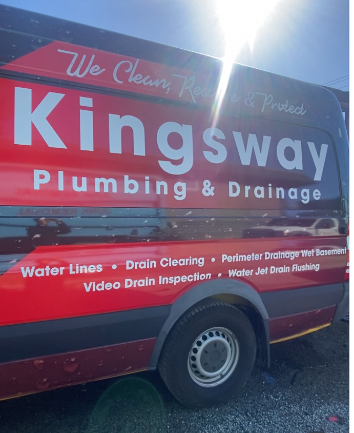

Who We Are

Kingsway Plumbing & Drainage is a locally owned and operated plumbing and drainage company proudly serving the Greater Vancouver area. We built our business on straightforward work — showing up on time, diagnosing the problem honestly, and fixing it right the first time.
From blocked drains and water line repairs to full perimeter drainage systems and video inspections, we handle the jobs that other companies turn away. Our team brings professional-grade equipment and real experience to every project, whether it's a routine drain clearing or a complex foundation drainage installation.
We believe every homeowner deserves clear answers and fair pricing. That's why we always start with a free estimate and take the time to explain exactly what we're doing and why. No surprises, no upselling — just solid drainage work done properly.